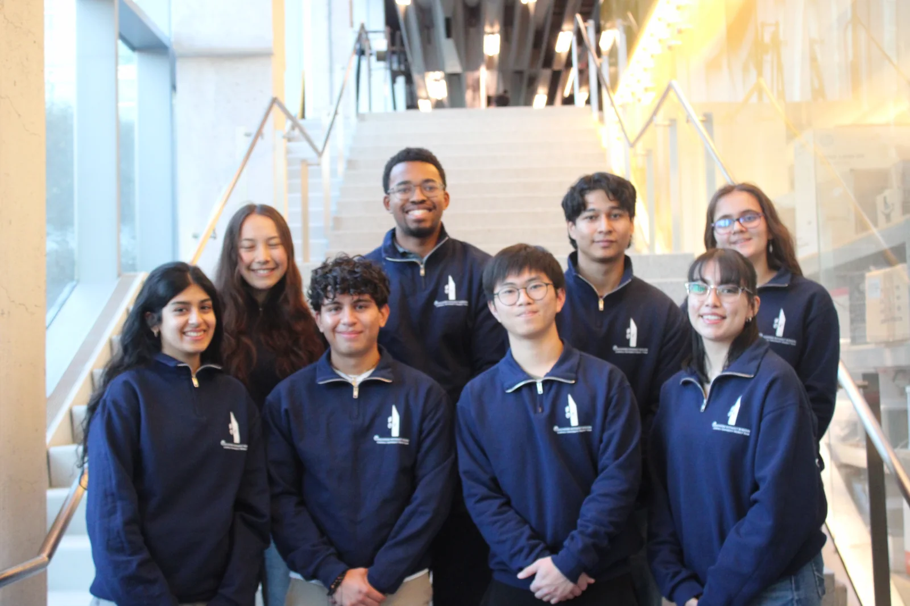
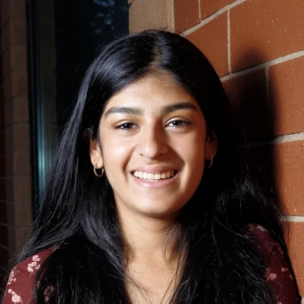
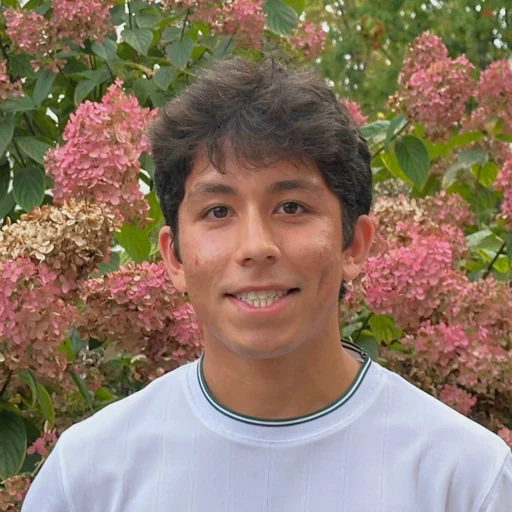
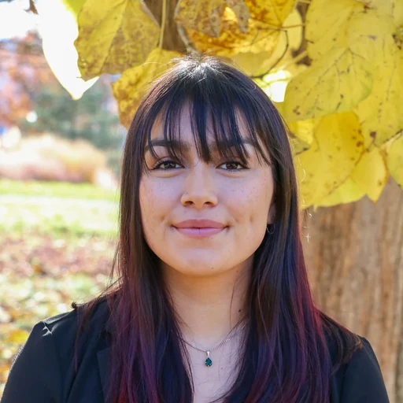
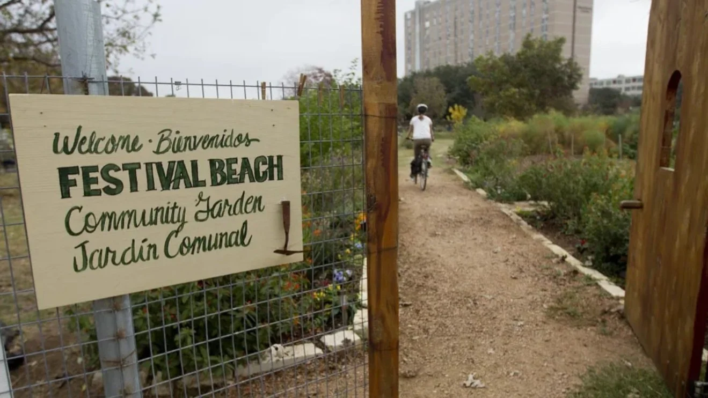
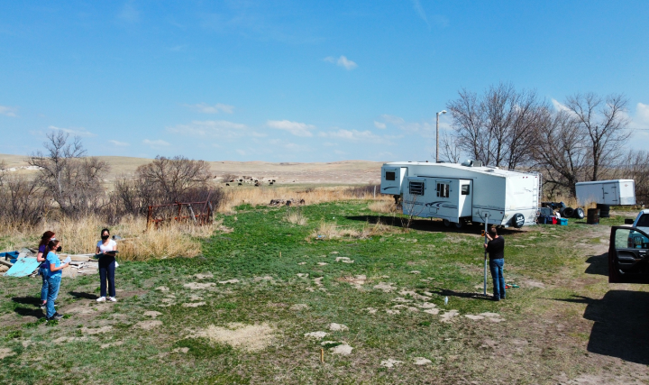

Subteam Overview
The Domestic Subteam designs water and housing infrastructure with community partners in the United States. We work through local organizations, who own and maintain what we build.
In Austin, Texas we are designing the water system for the Festival Beach Community Garden & Food Forest: stormwater flow diversion, efficient irrigation, cistern-based rainwater storage, reclaimed water reuse, and solar-powered pumping. The partnership began in Summer 2024, designs were refined through Spring 2025, and construction documents are being finalized in Fall 2025.
On the Pine Ridge Reservation in South Dakota we designed a four-person Sustainable Housing Unit in response to housing insecurity and overcrowding, with a kitchen, full bathroom, and living space, plus full structural, architectural, and MEP construction sets. It was completed in Summer 2025 in partnership with EWB-USA.
Meet the Subteam

Class of 2029
Class of 2028

Class of 2028
Class of 2029

Class of 2027

Class of 2027
Class of 2027
Class of 2029
Class of 2028
Active Projects

ActiveFestival Beach Community Garden
Stormwater diversion, rainwater harvesting, reclaimed-water reuse, and solar pumping for climate-resilient, year-round irrigation.

CompletedSustainable Housing Unit
A four-person home built with affordable, durable methods and full architectural, structural, and MEP plans, with First Families Now.
Festival Beach Community Garden
In Summer 2024, the Domestic Subteam began a partnership with the Festival Beach Community Garden & Food Forest in Austin, Texas, addressing water insecurity and rising costs through practical, community-driven engineering. Throughout Fall 2024, the team worked closely with local stakeholders to co-develop an engineering Work Plan focused on stormwater flow diversion, efficient irrigation, cistern-based rainwater storage, reclaimed water reuse, and solar-powered water pumping.
The project aims to reduce flooding, ensure reliable irrigation, and lower dependence on potable water—supporting local sustainability goals while building technical capacity within the community. All solutions are shaped by ongoing feedback from residents to ensure long-term usability and alignment with local priorities.
With guidance from civil and environmental engineering mentors, and in collaboration with professional firms, the team used CAD, GIS, and hydraulic modeling to refine designs in Spring 2025.
In Fall 2025, members will finalize construction documents and implementation plans, gaining hands-on experience in applied engineering consulting. Through direct engagement with the community and industry mentors, students are helping deliver climate-resilient, high-impact solutions that reflect both technical excellence and local context.
Project details →Pine Ridge Reservation
In response to the pressing challenges of housing insecurity and overcrowding on the Pine Ridge Reservation in South Dakota, our team designed a Sustainable Housing Unit (SHU) to deliver a lasting, community-driven solution. This four-person home provides essential amenities, including a kitchen, full bathroom, and comfortable living spaces, while focusing on affordability, sustainability, and functionality.
The project incorporated sustainable materials and construction practices, alongside rigorous quality assurance processes, to ensure cost-effective, durable, and accessible housing. Comprehensive construction sets were developed, including structural, architectural, and MEP drawings, to guide every phase of execution with precision and reliability.
Completed in Summer 2025, the SHU demonstrates the power of engineering to drive meaningful change—addressing critical infrastructure needs and fostering resilience in partnership with EWB-USA.
Project details →Want to join the Domestic Subteam?
We take students interested in water and housing infrastructure in the US.